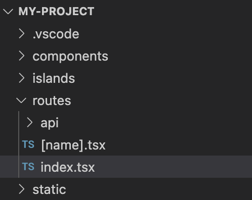
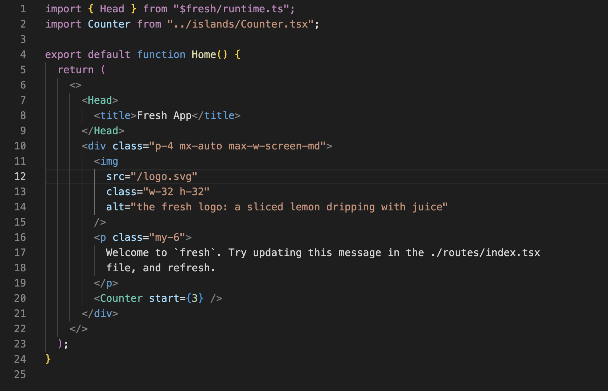

class: middle center no-number <div style="display: flex; justify-content: space-evenly;"> <div style="display: flex; flex-direction: column; justify-content: space-evenly;"> <span class=""> Fresh の紹介 </span> <small>Yoshiya Hinosawa</small> </div> </div> --- # <div style="display: flex; align-items: center; gap: 12px;"><img src="assets/fresh-logo.svg" width="80"><span>Fresh とは</span></div> - Deno 向けのフロントエンドフレームワーク - Next.js に似たファイルベースルーティングの仕組み - View は Preact (軽量 React) で記述 - アイランドアーキテクチャを採用 --- <div style="display: flex; align-items: center; gap: 12px;"><img src="assets/fresh-logo.svg" width="80"><span>Fresh アプリのディレクトリ構造</span></div>  --- <div style="display: flex; align-items: center; gap: 12px;"><img src="assets/fresh-logo.svg" width="80"><span>Fresh アプリのディレクトリ構造</span></div> 3つの特別なディレクトリ - `routes/` - `static/` - `islands/` --- <div style="display: flex; align-items: center; gap: 12px;"><img src="assets/fresh-logo.svg" width="80"><span>Fresh アプリのディレクトリ構造</span></div> `routes/` - ファイルがそのまま URL になる - `routes/index.tsx` => `ドメイン名/` - `routes/about.tsx` => `ドメイン名/about` -- <br /> <p class="text-center">Next.js, Nuxt, Remix などと同様</p> --- <div style="display: flex; align-items: center; gap: 12px;"><img src="assets/fresh-logo.svg" width="80"><span>Fresh アプリのディレクトリ構造</span></div> Route ファイルの例 <div class="text-center">  </div> --- <div style="display: flex; align-items: center; gap: 12px;"><img src="assets/fresh-logo.svg" width="80"><span>Fresh アプリのディレクトリ構造</span></div> - View - Preact - Style - Tailwind (将来的にはSass等も対応予定) <div class="text-center"> </div> --- <div style="display: flex; align-items: center; gap: 12px;"><img src="assets/fresh-logo.svg" width="80"><span>Fresh アプリのディレクトリ構造</span></div> `static/` - ファイルがそのまま配信される - `static/favicon.ico` => `/favicon.ico` - `static/style.css` => `/style.css` - `static/image/hero.png` => `/image/hero.png` --- <div style="display: flex; align-items: center; gap: 12px;"><img src="assets/fresh-logo.svg" width="80"><span>Fresh アプリのディレクトリ構造</span></div> `islands/` - ファイルがアイランドコンポーネントになる --- class: middle center inverse アイランド(island)とは --- <div style="display: flex; align-items: center; gap: 12px;"><img src="assets/fresh-logo.svg" width="80"><span>Fresh のアイランドアーキテクチャ</span></div> アイランド(島) = ページ内の特定の部分を表す言葉 <div class="text-center"> <img src="assets/islands-arch.png" width="500"/> </div> --- <div style="display: flex; align-items: center; gap: 12px;"><img src="assets/fresh-logo.svg" width="80"><span>Fresh のアイランドアーキテクチャ</span></div> 特定のアイランドにだけ JS を適用する <div class="text-center"> <img src="assets/islands-arch.png" width="500"/> </div> --- <div style="display: flex; align-items: center; gap: 12px;"><img src="assets/fresh-logo.svg" width="80"><span>Fresh のアイランドアーキテクチャ</span></div> インタラクションのない部分の JS は配信しない <div class="text-center"> <img src="assets/islands-arch.png" width="500"/> </div> --- <div style="display: flex; align-items: center; gap: 12px;"><img src="assets/fresh-logo.svg" width="80"><span>Fresh のアイランドアーキテクチャ</span></div> - `islands/` 以下のファイルはアイランドコンポーネント - アイランドコンポーネントでは、View の「動き」を記述出来る - ex. onClick, useState --- <div style="display: flex; align-items: center; gap: 12px;"><img src="assets/fresh-logo.svg" width="80"><span>Fresh のアイランドアーキテクチャ</span></div> - 逆に、アイランドではない場合、動きは記述出来ない (記述しても無視される) - アイランドではないコンポーネントはほぼテンプレートエンジンと同じ -- <br /> <p class="text-center">※ 動きのあるものと無いもの<br />をはっきり区別する必要がある</p> --- class: middle center bg-light-yellow Fresh の良いところ --- Fresh の良いところ1 # パフォーマンスが良い - デフォルトで JS を吐かない - アイランドコンポーネントを書いた部分だけ JS が配信される - JS の量が少なくなる => 速い - Core Web Vitals を計測すると実際良い数値が出やすい --- Fresh の良いところ2 # DX (開発体験) が良い - Fresh の依存関係は Deno が実行時に自動的に解決してくれるので `npm install` 的なものがない - Fresh はソースコードから直接 HTML や JS を生成するため「ビルド」のステップがない - TypeScript は Deno がやってくれるので設定無しで TypeScript を使える -- <div class="text-center">🙌サイトの開発に集中できる🙌</div> --- Fresh の実績 - Deno 関連の Web サイトはほぼ大体 Fresh で書かれている - ex. 公式ホームページ、マニュアル、 - [Fresh Showcase](https://fresh.deno.dev/showcase) というページに実例がたくさん --- class: middle center 今なら Deno Deploy にデプロイすれば無料でインターネット上でサイトを公開出来ます。 --- ## まとめ - Fresh は Deno 用のフロントエンドフレームワーク - アイランドアーキテクチャを採用しているため、描画のパフォーマンスが高い - Next.js に似ているが、より良い開発体験を提供 - Deno 界隈では結構使用実績がある --- class: middle center Let's try fresh! `deno run https://fresh.deno.dev my-app` --- class: middle center <img src="assets/fresh-logo.svg" width="150"> Thank you!
loading...